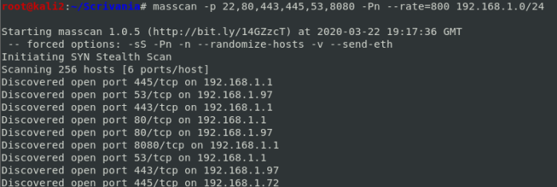
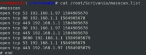

masscan
SITE:
https://github.com/robertdavidgraham/masscanSupported
OSs: Linux, Mac OS X, Windows
masscan is like nmap but a lot faster, however little bit
less accurate. So we can use
masscan to perform a host discovery and the conduct a detailed scan
with nmap against hosts which we find interesting
We have to be careful to use it because is a tool very
powerful and can be configured to send million of packets per second(with the option --rate) which can cause us to
be blocked from networks protections mechanism or damage the scanned environment
Other fast scanning tools:
ScanRand, ZMap, SuperScan, Unicornscan
Installation(on Kali Linux is already installed)
$ sudo apt-get install git gcc make libpcap-dev
$ git clone https://github.com/robertdavidgraham/masscan #clone repository
$ cd masscan
$ make -j # building goes a lot faster by using the multi-threaded build -j
example:
masscan -p 22,80,443,445,53,8080 -Pn --rate=800 192.168.1.0/24

Save and reuse configuration file
Is possible to read and execute predefined scanning settings in a configuration file, so we can
design a scan template and used among different scanning tasks
masscan -p 22,80,443,445,53,8080 -Pn --rate=800 192.168.1.0/24 --echo > /root/Scrivania/masscanf.conf
reuse configuration file:
masscan -c /root/Scrivania/masscanf.conf
Output on file
We have to use
--output-format and
--output-filename options
masscan -p0--65535 -Pn --rate=15000 192.168.1.0/24 --output-format list --output-filename /root/Scrivania/masscan.list
For
large
scans, we can use Masscan's binary file format to save space
masscan –p0-65535 --rate 15000 --output-format binary --output- filename full.mass 192.168.1.0/24
Than binary format can be exported to other formats(like in this case xml) with --readscan
masscan --read-scan full.mass --output-format xml --output-filename full.xml
Use of a VPN or specify a network interface
OPTIONS:
-e <ifname> → specify the network interface to use
--router-ip
<ip-router> → we have to specify the ip of the router inside the network(Gateway Router IP generally end with
a .1 but could be anything )
example:
masscan -p 22,80,443,445,53,8080 -Pn --rate=800 10.142.111.0/24 -e tap0 --router-ip 10.142.111.1